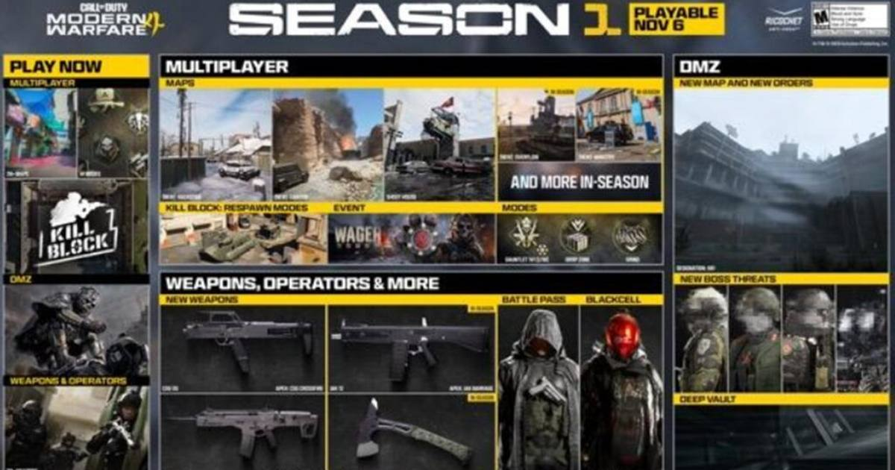

Modern Warfare 4 Season 1 Goes Live November 6: Three Maps, DMZ's X01 Black Site, and Warzone's New Era
Season 1 lands at midnight ET on November 6 with Backstab, Canyon, and a snowy Shoot House, the X01 black site in DMZ, two new Warzone maps, and a Battle Pass headlined by the Cronen Osprey and CSG-35.

Two weeks after launch, Modern Warfare 4 gets its first real season. Season 1 goes live at midnight ET on Friday, November 6 — 9 p.m. PT on Thursday, November 5 — across PlayStation 5, Xbox Series X|S, Nintendo Switch 2, and PC. And this is not a light content drop with a Battle Pass stapled to it. It is new maps, new modes, a new DMZ location, and the day Warzone fully becomes a Modern Warfare 4 game.
The maps
Three 6v6 maps arrive at launch. Backstab drops players into a war-torn zone of abandoned military equipment. Canyon is the mountainous one, with elevation changes built around an ambush on a river convoy. And Shoot House — the fan favorite — returns reimagined in snowy North Korean terrain.
That is just the launch wave. More than six maps are planned across the season, with Ministry and Overflow plus additional maps still classified for the mid-season update. Kill Block gets its own twist too: Kill Block: Crash, where the map stays static and Crash is always front and center.
The modes
Season 1 brings back Grind, adds Drop Zone, and runs Gauntlet 1v1 as part of the Wager Match event. Mid-season adds Counter Attack, a bomb mode built around detonating the enemy's Comm Station while defending your own. And the two Halloween party modes that dropped this week — Possession and Infected — are part of the same build-up, already live before the season even starts.
DMZ gets X01
The extraction crowd gets the biggest single addition: X01, a secret weapons facility captured by enemy forces on the outskirts of the Hajin location. Deploying to X01 means hunting the Commander-in-Chief in Threat Briefing contracts, searching for unique equipment blueprints, and running Resupply Runs, alongside new boss threats, new orders, DMZ events, and FOB enhancements.
The arsenal and the Battle Pass
Two free Battle Pass weapons headline the grind: the Cronen Osprey assault rifle at Tier 16 and the CSG-35 SMG at Tier 36. Later in the season, the JAK 12 Shotgun and the ZLR Talonhawk melee weapon join the arsenal. The Season 1 Battle Pass runs 1,100 COD Points with over 100 reward tiers and a new catch-up system, and the C.O.D.E. Valor Pack arrives in Season 1 along with the "Locked Down" weapon camo.
Warzone's new era
Season 1 is also the moment Warzone integrates Modern Warfare 4 content and seasonal progression. Two new Warzone maps arrive — Hajin, the Battle Royale version of the DMZ map, and Zodiac, a Resurgence map built around a train running through it — alongside the return of Verdansk and Rebirth Island. Ricochet Anti-Cheat extends to MW4 Warzone in Season 1. The full Warzone briefing lands in a separate post on Monday, November 2.
One hard cutoff to know: Warzone will no longer be playable on PlayStation 4 and Xbox One starting with Season 1. Progression and purchases carry to a current-gen console or PC on the same Activision account.
Watch
Source: "Call of Duty: Modern Warfare 4 | Season 1 Launch Trailer" — the official Season 1 trailer, covering the new multiplayer maps and modes, X01, and the all-new DMZ Exclusion Zone ahead of the November 6 launch.
Sources: GamesBeat, Pixel Herald, GameBeacon, FPSHub
Gear up: Razer — mice, keyboards, headsets and laptops.